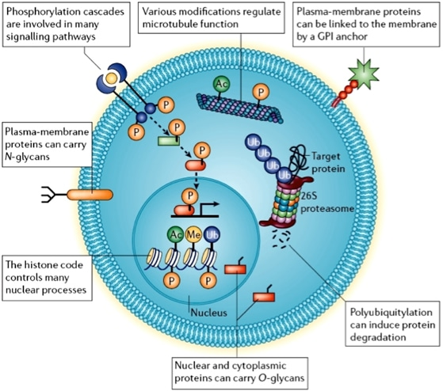
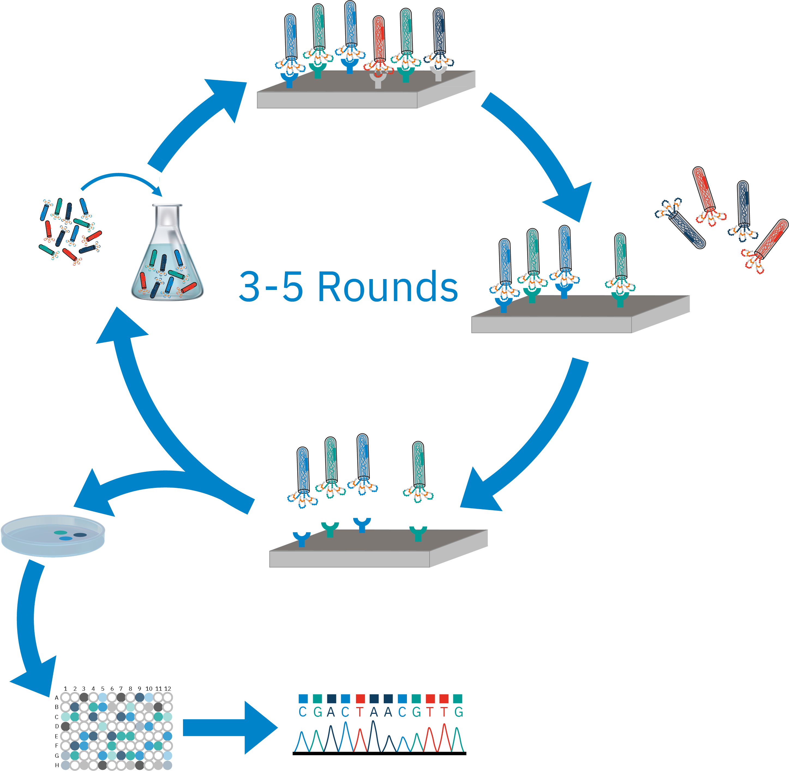

Research
Our research focuses on the following key areas:
- Chemical Biology in Protein PTM
Protein posttranslational modification (PTM) refers to the chemical changes
that occur to a protein after it is synthesized during translation.
These modifications, which include phosphorylation, glycosylation, ubiquitination,
acetylation, and methylation, among others, can significantly alter a protein's function,
stability, localization, and interactions with other molecules. PTMs are crucial for
regulating cellular processes, signaling pathways, and overall protein activity,
enabling cells to respond dynamically to environmental changes and physiological needs.
So, understanding PTMs is essential because they play a critical role in disease mechanisms.
During the past years, we have developed many highly selective chemical probes of several writers, erasers and readers of these PTMs.
In phosphorylation, we developed many types inhibitors of c-Met, FGFR，CDK7, RIPK2 and MK2 kinases. For acetylation, we focused on design of BET inhibitors.
And in methylation, we carried out many studies on the design of inhibitors of demethylase LSD1 and protein arginine methyltransferases PRMT4 and PRMT5.
Currently, we are focusing on the enzymes involved in the ubiquitination processes.

- Peptide Drug Discovery with Phage-Display Technology
Peptide drug discovery using phage-display libraries is a powerful approach for identifying
high-affinity peptide ligands that can bind to specific therapeutic targets,
such as proteins or receptors. In this technique, a diverse library of peptides
is genetically engineered to be displayed on the surface of bacteriophages.
Each phage carries a unique peptide sequence,
allowing for the screening of millions to billions of potential candidates
simultaneously. The library is exposed to a target of interest, and phages
displaying peptides with high binding affinity are selected and amplified
through multiple rounds of biopanning. This iterative process enriches for
peptides that specifically interact with the target. Currently, we are developing new technologies for online modifying
the natural amino acid into non-natural amino acid and cyclizing the peptides with new chemical method.
Besides, we are also utilizing the machine learning approach to analyze and deign bioactive peptides.
Together with our previously developed ADC technology, we can further advance the peptide into peptide-drug conjugates.

- Structure-based Drug Discovery
Structure-based drug discovery (SBDD) is a rational approach that leverages
the three-dimensional structures of target proteins to design and optimize
potential drug candidates. By using high-resolution structural data obtained
from techniques such as X-ray crystallography and cryo-electron microscopy
(cryo-EM), we can visualize the atomic details of a target protein,
including its binding pockets, and conformational dynamics.
This structural information serves as a critical starting point for identifying
and designing small molecules that can interact with the target
in a specific and potent manner. In our lab, we have integrated displines of structural biology,
computaitonal modeling and medicinal chemistry to design and develop drugs on c-Met kinase (Gumarontinib, marketed) and LSD1 (X-L177, IND).
We are also build a fragment-based drug discovery platform for new targets. Currently, our lab have a fragment library of more than 2000 compounds,
and we can use Mass Spectra to screen the library rapidly to find the weak binders. Then the SBDD approach can be used to optimize it into drug candidates.